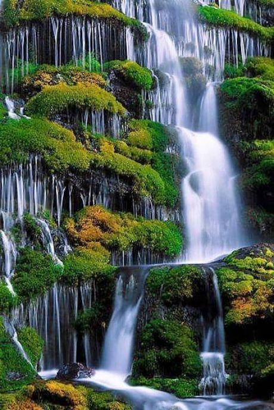
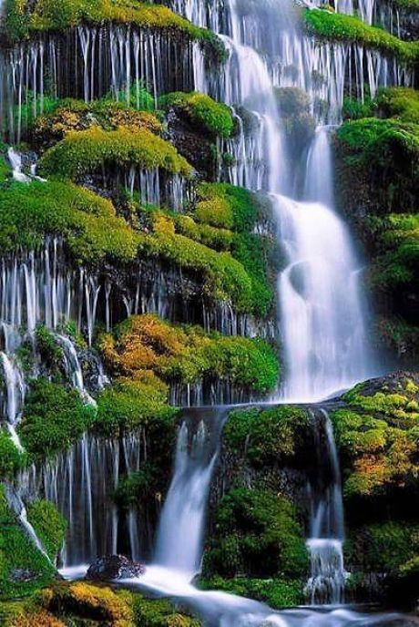

La Importancia del Agua
El agua es esencial para la vida en la Tierra. Es un recurso limitado y cada vez más escaso. Preservar este bien natural es fundamental para el futuro de nuestro planeta.

El agua es esencial para la vida en la Tierra. Es un recurso limitado y cada vez más escaso. Preservar este bien natural es fundamental para el futuro de nuestro planeta.
El agua es el recurso natural más importante para la vida, ya que sin ella los ecosistemas no podrían funcionar. En los últimos años, el consumo desmedido, la contaminación y el cambio climático han puesto en riesgo su disponibilidad.
El agua es utilizada en múltiples actividades, como:
La escasez de agua trae consigo diversos problemas, entre ellos:
Algunas formas de conservar el agua incluyen:
La conservación del agua en la industria de la construcción: Los edificios representan hasta el 40% del uso mundial de agua. Con el crecimiento de la población, es crucial que el sector de la construcción adopte prácticas sostenibles para asegurar el suministro futuro.
El sector de la construcción está adoptando prácticas de construcción ecológica, incluyendo:
Última actualización: Nov 12, 2024


 
